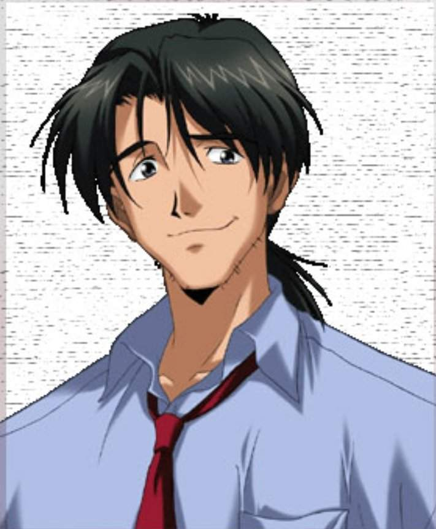

|  |
Ответственен, общителен, легко сходится с людьми, всегда производит впечатление спокойного и уверенного человека. Весьма любвеобилен. Хобби — выращивание арбузов. В начале сериала он является куратором Аски.
Аска влюблена в него и часто ревнует к Мисато, но к её несчастью Рёдзи не воспринимает маленьких девочек всерьёз.
Кадзи играет роль тройного агента. Он одновременно работает на Nerv в качестве специального инспектора собственной безопасности, формально изучает Nerv для японского правительства и тайно работает на Seele. Постоянно балансируя между Гэндо Икари и Seele в поисках информации он, похоже,
имеет личные интересы независимые от любой организации — поиск правды, скрытой за Nerv, Seele и проектом совершенствования человечества. В колледже он и Мисато были любовниками, но прервали отношения по желанию Мисато. Годы спустя, они снова встретились на корабле флота ООН, который переправлял Еву-02 и Аску в Японию.
Когда он вернулся в штаб-квартиру Nerv, Рёдзи и Мисато некоторое время подтрунивали и оскорбляли друг друга, но возродили свой роман, когда Мисато созналась, что она порвала с Рёдзи, так как поняла, что он напоминает ей отца. В конечном итоге его застрелил неизвестный, после того, как Рёдзи спас похищенного,
предположительно с его же помощью, Фуюцуки и этим выдал свою двойную игру, но до этого Рёдзи успел передать Мисато добытую информацию.
Приметы: Длинные тёмные волосы, собранные в «конский хвост», в остальном причёска пребывает в беспорядке. Мужественное лицо, перманентная щетина, которую никогда толком не сбривает, устойчивая ехидная ухмылка. |